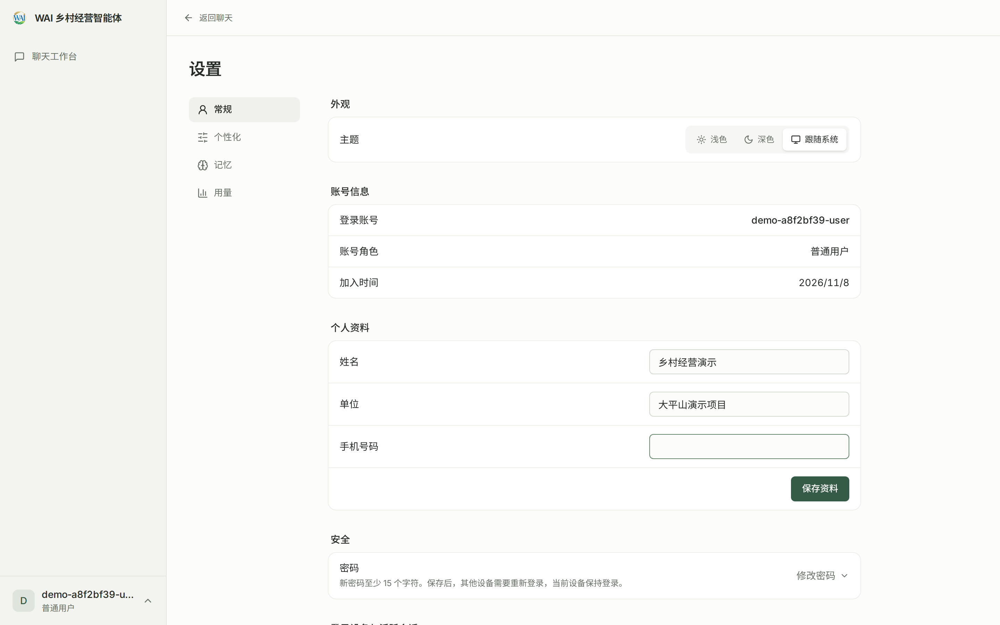
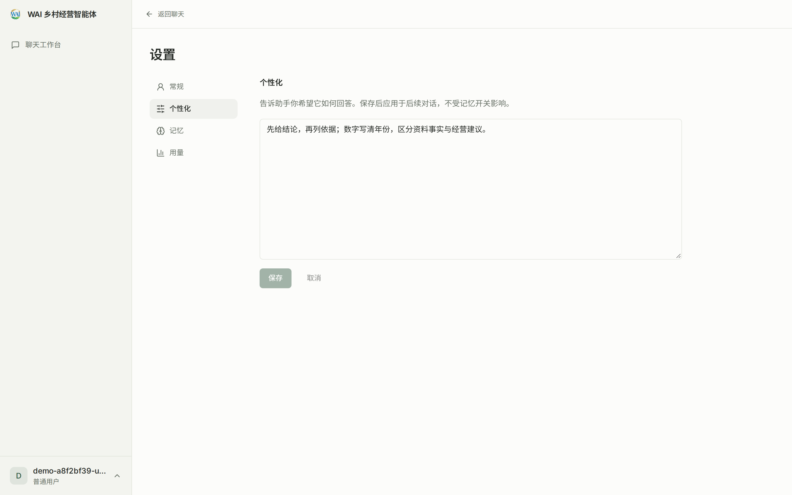
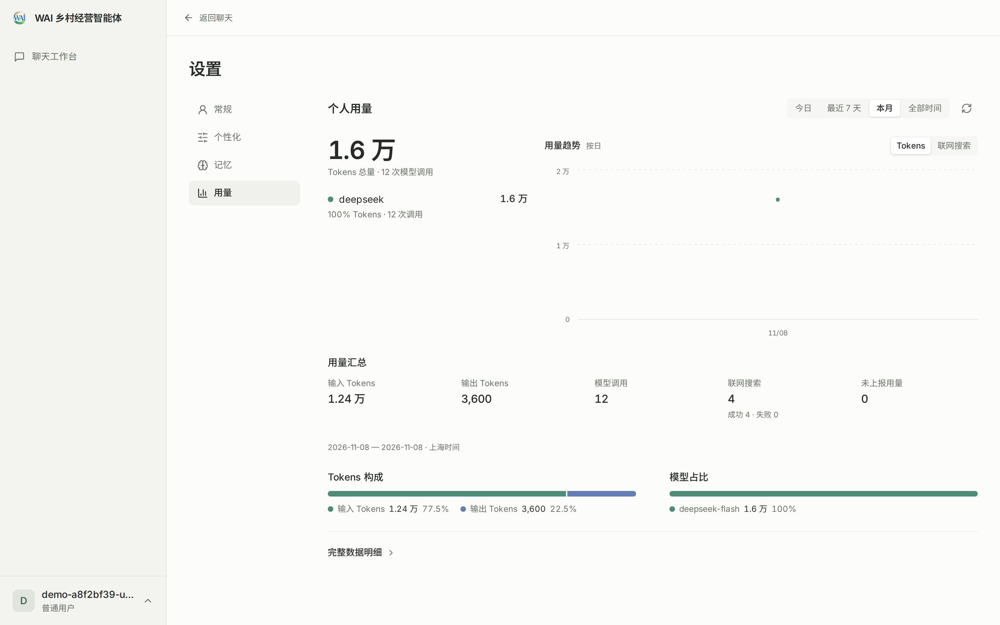

技能与设置
账户设置
有些要求每次都一样：先给结论，写清年份和单位，说明政策的发布单位。把这些写进设置，不必每次提问时重复。本单位的基本情况，也可以写进个性化，不必每次重复。
#打开设置
点左下角的用户卡片，选「设置」。设置页左侧有三项：常规、个性化、用量。点页面左上角的「返回聊天」回到对话。
#常规

#外观
选择页面的颜色主题：浅色、深色，或「跟随系统」（随你设备的深浅色设置自动切换）。
#账号信息
显示你的登录账号、账号角色（普通用户或管理员）和加入时间。这里只能查看。
#个人资料
可以填写姓名、单位、手机号码，填完点「保存资料」。你只能修改自己的资料。
#修改密码
点「修改密码」展开。新密码至少 15 个字符。保存后，你需要在所有设备上重新登录。
#个性化

个性化是一段文字，用来告诉助手你希望它怎么回答。写好后点「保存」，之后你所有的新对话都会遵照这段文字。
适合写在这里的，是长期不变的偏好。例如：
回答先给结论，再给依据。
涉及数字时，写清年份和单位。
政策类问题，说明发布单位和适用地区。
不确定的地方直接说明，不要猜。
语言简洁，少用英文缩写。要点：
- 保存后，之后的对话才会遵照。已经在进行的对话不受影响。
- 个性化只对你自己生效，在同一账号的所有对话里都可用。
- 输入框下方显示已用字数，上限是 102,400 字节（UTF-8 编码）。
- 点「取消」放弃本次修改。
#用量

用量页显示你自己使用助手的情况。
页面上方选择统计周期：今日、最近 7 天、本月、全部时间。下面显示：
| 项目 | 含义 |
|---|---|
| Tokens 总量 | 模型处理文字的计量单位，你提问和助手回答的文字越多，Token 越多。分「输入」和「输出」两项 |
| 用量趋势 | 按日显示 Token 用量的变化 |
| 模型调用 | 你让模型回答的次数 |
| 联网搜索 | 联网搜索的次数，分成功和失败 |
| 模型用量分布 | 各个模型各用了多少，按 Token 占比 |
日期按北京时间划分。用量页只做统计，当前不限制使用额度。